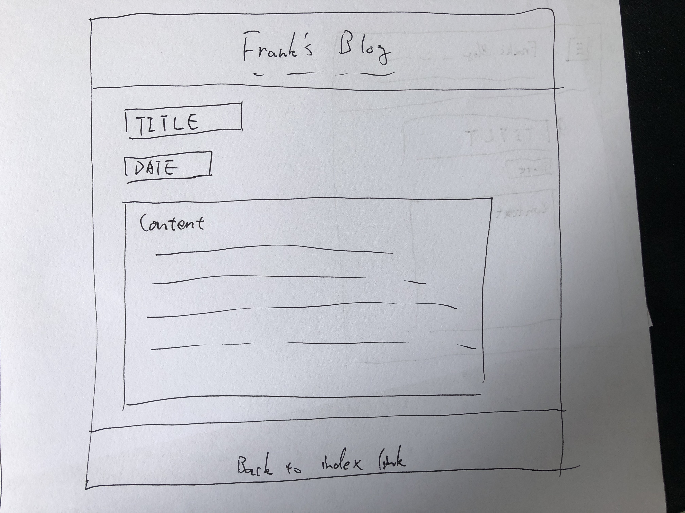
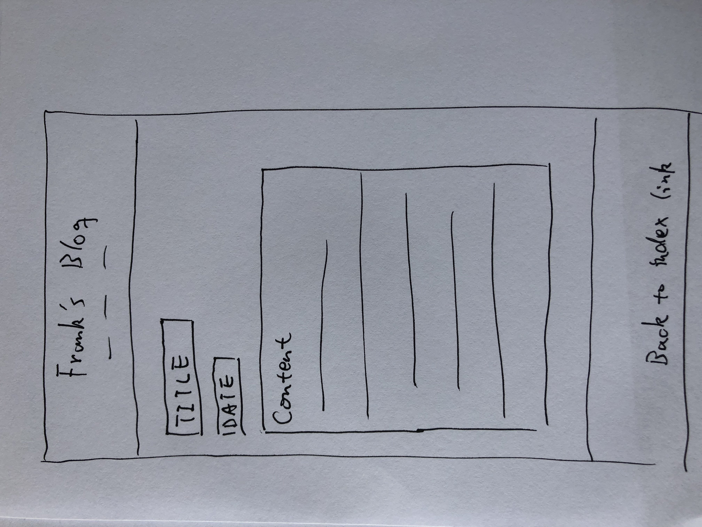
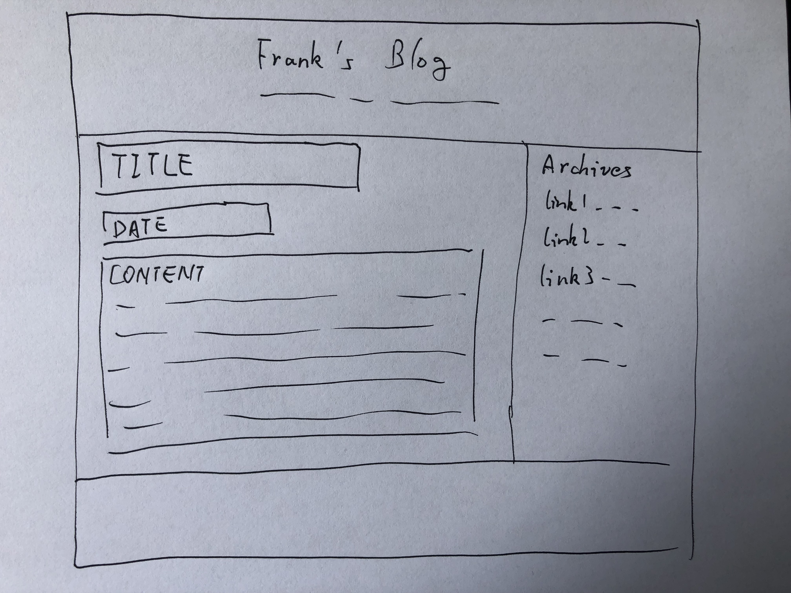
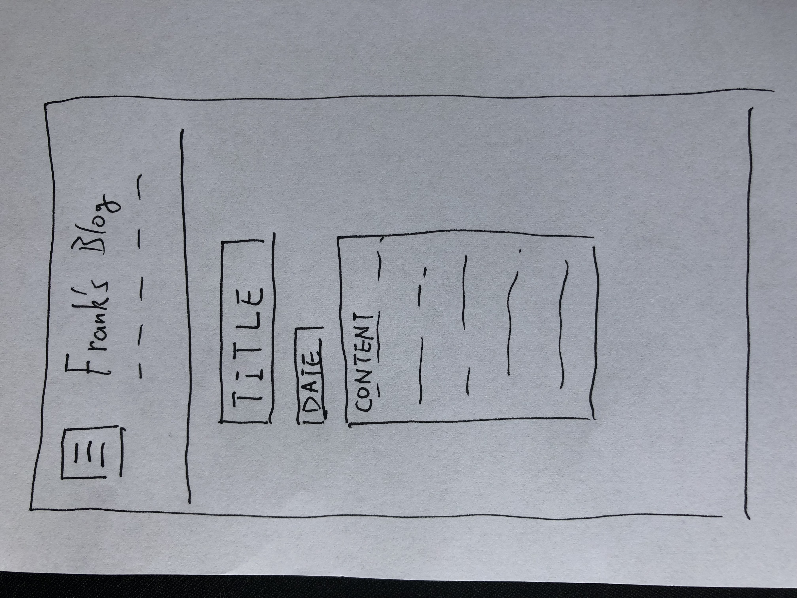

Responsive design
- Q: What a responsive site is, and why responsiveness is important.
- A: If the pages of the site adapt to different type of devices, it's a responsive site. Because the screen size of each devices are different. For example, It's not convenient for a mobile device to read multi columns page. When we design a web page, we need to consider the page layout on different type of devices.
- Q: What mobile first design is, and why it's important.
- A: Because it's simple, mobile usually has the smallest screen compare to others. So we must put the most important info and function on the mobile page. After that, when we design pages for tablet or laptop, we then can add more information and more complex feature onto the page.
- Q: What frameworks are, and their pros and cons.
- A: For me framework is like a tool pack, it contains a set of libraries and tools we need when we coding. It makes our coding life more easy and efficient. However we must to learn each framework first and framework can not replace all functions of a language, It may have some limit.
- Q: What a wireframe is and why we use it.
- A: When we design a web page, sometimes we draw a wireframe. It's like a draft of what the page looks like. It helps you to have a clear picture of what you will create without doing any coding.
Wireframe of my blog
wireframe-blog-page-desktop
wireframe-blog-page-mobile
wireframe-index-page-desktop
wireframe-index-page-mobile
